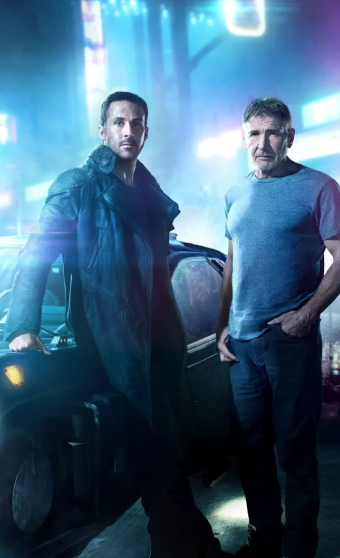
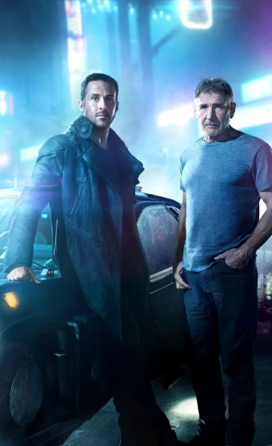

BLADE RUNNER 2049


 



Thirty years after the events of Blade Runner (1982), a new Blade Runner, L.A.P.D. Officer "K" (Ryan Gosling), unearths a long-buried secret that has the potential to plunge what's left of society into chaos. K's discovery leads him on a quest to find Rick Deckard (Harrison Ford), a former L.A.P.D. Blade Runner, who has been missing for thirty years.
___________________________________________________________________________________________LOS PROTAGONISTAS
K
Es un Blade Runner, el agente K (Ryan Gosling), se trata de un Nexus-9 (los que cazaba Deckard eran Nexus-6) va en una misión para disponer de un replicante más viejo, pues todos los viejos modelos han sido declarados “ilegales” y hay que “retirarlos”, un eufemismo para matarlos. Contrario a Deckard K trabaja solo porque tiene un dron que emerge de su auto cohete para fotografiar los alrededores en donde se conducen los arrestos y conservan las pruebas necesarias.
Niander
Él es un fabricante de replicantes y director ejecutivo de Wallace Corporation, cuyo objetivo es encontrar al hijo de Rick Deckard y Rachael, quien se revela como Ana Stelline, ya que es la primera replicante biológicamente nacida y podría demostrar que los replicantes son más que esclavos manufacturados.